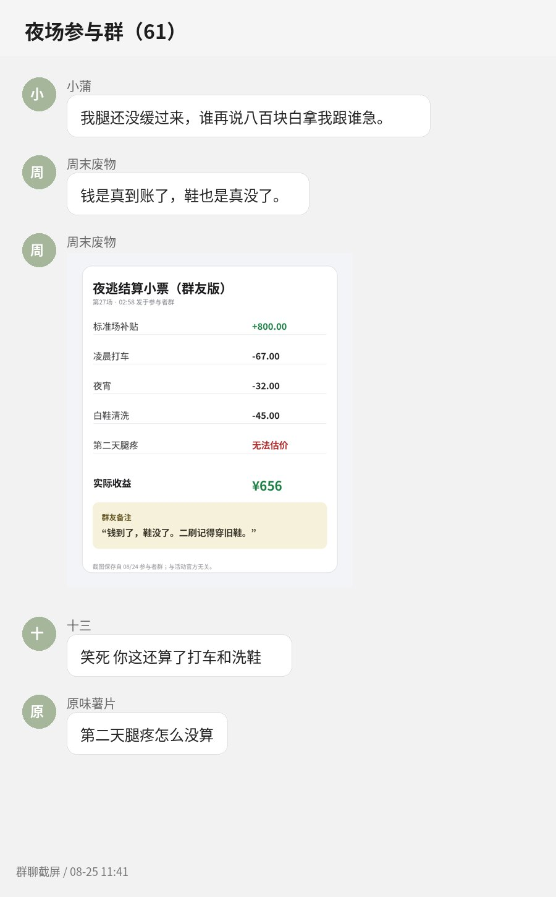

拖鞋07-18 22:04
参与 2 场
参与 2 场
二刷前先说，鞋真的要穿旧的
第一回我穿刚买的白鞋，出来以后鞋头全是灰。第二次学乖了。路线没完全一样，演员也换过，所以不是背答案就能过。
第一回我穿刚买的白鞋，出来以后鞋头全是灰。第二次学乖了。路线没完全一样，演员也换过，所以不是背答案就能过。
儿童区都拆光了，还放一辆摇摇车在过道里。我们组有人坐上去拍照，工作人员居然说“你们随便，别推下坡”。细节很土，但土得有点好笑。
有人问到底值不值。钱是真给了，我就是第二天上下楼梯像七十岁。

我六月那次没什么感觉，八月底陪朋友去就觉得最后一段有点呛。客服说设备都是水雾，我也没继续问，出来以后喉咙倒没不舒服。
前台两个，路上见过三个，演员肯定还有临时的。感觉一个人要顶好几个岗位。我那场有个戴工牌的人刚给我对讲提示，五分钟后又跑去搬道具。
我是认真的。回家三点半，洗完澡四点多，八点照样打卡。八百块扣掉打车其实也没剩那么多，但群里那个结算图确实没骗人。